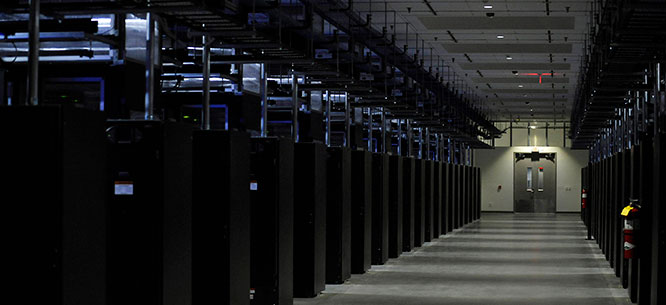

Build a Better Internet
An interview with Ben Tarnoff, the author of Internet for the People: The Fight for Our Digital Future.

Booked is a series of interviews about new books. For this edition, Dissent senior editor Nick Serpe talks to Ben Tarnoff, the author of Internet for the People: The Fight for Our Digital Future (Verso).
Big U.S. tech firms are facing more scrutiny now than ever before. Companies like Amazon and Facebook have come under fire, across the ideological spectrum, for everything from worker exploitation and anti-competitive behavior to scorched-earth political campaigns and the corruption of public discourse. Still, it can seem difficult to imagine a world without these corporations, whose products and services have become all but essential to our daily lives.
In Internet for the People, Ben Tarnoff argues that “the internet is broken because the internet is a business,” but a better, deprivatized internet is possible. Rather than provide the blueprint for a new online architecture, Tarnoff makes the case for democratic experimentation. Technology often feels like something that “is done to people,” he writes, but it can become “something they do together.”
Nick Serpe: Discussions about how technology intersects with politics and economics can seem forbiddingly complicated. If you ask a random person off the street, “What is the internet, and how does it work?” they would likely have a tough time giving an explanation. How did you settle on privatization as the story that you wanted to tell about the internet?
Ben Tarnoff: The internet is quite difficult to visualize, even at a fairly simple level. It is composed of so many different pieces, and operates at so many different scales, that it was a daunting task to not only explain what the internet is, in an accessible yet non-reductive way, but also tell a coherent story about its evolution. Privatization, the main character of the story, is a master abstraction that lets me think about how the internet came to be in its present form.
The metaphor that I make particular use of is the stack. I divide the internet into two layers: the pipes, or the physical infrastructure of the internet, and the so-called platforms, or the upper floors of the internet, often called the “application layer.” That’s where we really experience online life, through apps and sites. To understand the story of privatization, you have to understand how it unfolds differently at different layers of the stack. It starts in the internet’s basement, so to speak, among the pipes, and it moves up the stack to the so-called platforms.
Serpe: Let’s start at the bottom of the stack. What was the path laid out in the United States to make the infrastructure of the internet a private system?
Tarnoff: The internet is best understood as a language that allows different computer networks to speak to one another. That language was developed by Pentagon-funded researchers in the 1970s in order to bring the mainframe to the battlefield, so that soldiers deployed overseas could access computers located in the United States. Practically speaking, a Jeep somewhere in Vietnam might, through its small onboard computer, access a program that was running on a large, powerful computer somewhere in Northern Virginia. That was the dream of the internet: to stitch together the computing resources of the U.S. military to empower war-fighting forces with software. It was not realized right away, but that was the basis for funding the experiments that produced the universal language of the internet.
In the 1980s, the internet eventually became a civilian research network under the leadership of the National Science Foundation, used primarily by academic researchers within the United States. By the early 1990s, the network faced a crisis: a lot more people wanted to join the internet, but the capacity wasn’t there. The creation of the World Wide Web made the internet easier to use—the first websites and the first graphical web browsers appeared in the early nineties—and made more and more people eager to get online. The NSF was trying to find a way to expand the network to accommodate demand and decided to accelerate already-existing plans for privatization. Which is to say, privatization was the plan all along. There was never a thought that the U.S. government was going to indefinitely run this network of networks. They wanted to turn it over to the private sector, but they decided to do so more quickly and, as it turns out, more comprehensively, than previously planned.
In April 1995, the NSF-run backbone of the internet, called NSFNET, was terminated, and the private sector took over. There were a few more moves over the course of the late nineties and early 2000s, particularly under the George W. Bush–era FCC, that consolidated monopoly power over the pipes, laying the groundwork for the highly concentrated market of internet service that we have today. Which is why today just four firms—Comcast, Charter, Verizon, and AT&T—account for 76 percent of all internet subscriptions in the country, and why we pay some of the highest fees in the world in exchange for awful service. That is, briefly, the story of the privatization of the “pipes.”
Serpe: There are existing alternatives, like the public internet-service provider in Chattanooga, Tennessee. What are some of the obstacles to expanding public systems like that?
Tarnoff: There were always alternatives to the total privatization of the pipes. In 1994, Senator Daniel Inouye introduced a bill that would have required telecoms to reserve as much as 20 percent of their capacity for “public uses.” In particular, it would be used to offer free access to qualifying institutions that serve the public without charge, like libraries, and, further, such organizations would receive funding to support their ability to serve the public. Public media and the Corporation for Public Broadcasting were major sources of inspiration. They called it the “public lane on the information superhighway.” But there wasn’t a social movement capable of overcoming the immense power of the telecoms. So the public lane would never be built.
Still, as you pointed out, various alternative ways of organizing the pipes have emerged in the years since. Perhaps the best-known example is the municipal broadband network run by EPB, a power and telecommunications company owned by the city of Chattanooga. In 2010, EPB began offering broadband service, and it had the fastest residential speeds available in the United States at the time. It continues to offer very high speeds at remarkably low cost. It is one of hundreds of so-called community networks—publicly and cooperatively owned broadband networks—across the country that can provide far better service to their communities than the big telecoms do. Unlike the big telecoms, they’re not spending billions on share buybacks and dividends and tens of millions of dollars on executive compensation. They can prioritize social ends, such as universal connectivity, that the big telecoms, frankly, aren’t interested in.
Inevitably, there are limitations to the community networks, and they face immense obstacles, not least of which is hostile state legislatures: thanks to telecom lobbying, municipal broadband is restricted or banned outright in seventeen states. But I think community networks offer the kernel of what it might look like to put people over profit, not just by prioritizing connectivity but also by enabling members of a community to actually participate in decisions about how infrastructure is developed and deployed. At their best, community networks encode the principles and practices of democratic control into their operations.
Serpe: When we move up the stack, it gets harder to wrap our heads around the story of privatization, in part because it’s harder to imagine an internet user experience that isn’t so completely dominated by corporate power. But you also explain how privatization, as a process, occurred at the “platform” level.
Tarnoff: The privatization of the internet was a process, not an event. It didn’t involve a simple transfer of ownership or assets from the public sector to the private sector, but rather something more complex: the programming of the profit motive into every layer of the network. At the level of the pipes, money is made primarily by selling access to the internet, as well as by running its deeper networks. Moving up the stack, activity, rather than access, is monetized. The attempt to monetize activity was the basis of the dot-com boom that kicked off in 1995—not coincidentally, the same year that the main federal-run backbone of the internet was decommissioned and the pipes were turned over to the private sector.
Famously, the dot-com boom imploded in 2000 and 2001. There were structural challenges to pushing privatization up the stack, which makes sense, because it was a network built by research scientists and developed over the years for their purposes. In the book, I argue that the mechanism by which privatization was finally pushed up the stack in the aftermath of the dot-com bust was a complex computational system most people know as “the platform,” though I dislike the term “platform.” I argue, building on the work of the scholar Jathan Sadowski, that these systems that emerged from the rubble of the dot-com era are, instead, best understood as “online malls.”
In my view, eBay anticipated the core elements of the online mall. It was the “proto-platform,” if you like. Early on, eBay figured out how to leverage the social aspects of the internet as a medium for commercial gain. It managed to fuse the community and the market. Pierre Omidyar, the founder, was an aficionado of early online communities, and he resented the tacky commercialization of the dot-com era. He wanted to find a more social, communal, authentic way to be online—and happened to make a very lucrative business out of it. In the process, he innovated the main characteristics of what would later become the online mall, which would, in turn, make it possible for privatization to ascend the stack and for the true profit potential of the internet to be realized.
Serpe: How do we begin to think about deprivatizing such a complex set of systems?
Tarnoff: Deprivatization aims for an internet where people, not profit, rule, an internet where people have access to the resources they need to lead self-determined lives and the power to participate in decisions that affect them. At the level of the pipes, it’s pretty clear how to achieve such an internet: we need to use public policy to extend, deepen, and democratize community networks. As we move up the stack, it gets more complicated. So many kinds of activity are being monetized, and being monetized in so many distinct ways, that there’s much more complexity to reckon with.
Google, Facebook, Amazon, Uber: they all inhabit this layer of the internet, and they are all recognizably online malls in one way or another. But their business models are distinct. Their precise entanglements of social, financial, and political forces are distinct, and thus the harms that they inflict are distinct as well. Because we encounter a greater diversity of forms at this altitude of the internet, our strategies for deprivatization have to be comparably diverse. In the book, I mention a number of different experiments for developing deprivatized versions of online services that encode principles of democratic control, such as a worker-run app-based service or a user-owned social media community. These experiments are worth taking seriously. But, to become more robust, and more of a threat, they need to be greatly expanded through public policy.
Serpe: There is another tradition, related to what became known in the 1990s as the “Californian Ideology,” that sees a privatized internet as synonymous with democratic power—free markets, without onerous state control. There’s been a lot of criticism of this ideology in recent years, but in the book it doesn’t seem like you’re interested in directly confronting or refuting these ideas.
Tarnoff: The legacy of nineties-era cyber-libertarianism looms large. Everyone reads John Perry Barlow’s A Declaration of the Independence of Cyberspace. I read WIRED devotedly as a kid in the nineties. I inhaled those ideas. And that might be why I’m not quite as critical of that tradition as some people are today. The thing to understand about Barlow and the cyber-libertarians is that the U.S. government did pose a credible threat to the freedom of online speech at the time. The Communications Decency Act of 1996 aimed at restricting obscenity and indecency on the internet in order to make the internet “safe” for kids—it was part of the same era of moral panic that produced the V-chip and congressional hearings on violence in video games. So when the cyber-libertarians identified state power as a threat to online life, there was some basis for doing so. And we still can’t be complacent about the potentially destructive role of state power. FOSTA-SESTA, passed by Congress in 2018, is a good example: nominally a law to stop sex trafficking, it has hurt sex workers across the country by creating an exemption to the famous Section 230 protections, which grant online services and internet service providers immunity from liability for user content. More concretely, FOSTA-SESTA made it possible to punish sites like Craigslist or Backpage for hosting ads for sex workers. That’s an example of the kind of thing that cyber-libertarians were worried about in the nineties.
Obviously, the critique of the cyber-libertarians is that, in focusing so much on the state, they neglected to think much about corporations. And that’s a fair critique, though it applies to some more than others of that set. The diverse forms of social damage generated by the contemporary internet are the direct consequences of a corporate dictatorship over the physical and virtual infrastructures of the internet. Still, we can’t just reflexively embrace the state as somehow the opposite of capital. That’s not true: the state is a capitalist state—the state is the guarantor of the accumulation regime, if you want to be more Marxist about it. So we always have to be wary of it, even as we recognize that certain public policy tools are indispensable for advancing our political goals.
Serpe: You’ve written extensively elsewhere about the tech-worker movement. Labor is by no means absent from this book, but an analysis of the role of workers in internet-related sectors isn’t a central concern. Is tech-worker organizing related to this story about privatization and fighting for deprivatization?
Tarnoff: I define “tech worker” quite broadly: Anyone who does any work, in any capacity, in any employment relation, for a tech company. There are a variety of ways that tech workers could participate in a project to deprivatize the internet. Unionized communications workers could develop municipal broadband infrastructure, to give one example.
But I also am a little bit wary of giving tech-worker organization too much emphasis when we talk about the ways forward. I’ve read a few books in recent years that allude to organized tech workers in the final chapter as “the great hope” for saving the internet. There are places where tech workers can, in coalition with communities and social movements, be quite useful. They do possess the technical expertise, whether at the level of the pipes or at the level of the so-called platforms, that will be necessary for any transformational project of the internet. But we also have to recognize that many of them, although not all of them, inhabit a relatively elevated social layer. And we should be cautious about giving them more power to legislate our digital world.
It’s important for tech workers to gain more control over their workplaces and over the products of their labor. But the goal shouldn’t be to take immensely consequential decisions about how technologies are developed and implemented out of the hands of a handful of executives and put them into the hands of thousands of relatively well-paid software engineers. Within the tech–worker movement, we always have to advocate for a more solidaristic style of organizing that emphasizes wall-to-wall industrial unionism and coalitions with the communities that are affected by the technologies, and pushes back against a more particularistic, craft-unionism model that is based on protecting existing privileges.
There have been a number of discussions in tech-worker organizing circles about what a more democratic technological society would look like and how tech workers can play a role in achieving it. There is great interest in precedents, such as the Lucas Plan, of workers coming together to build technologies for social good rather than for private profit. But again, tech–worker organization alone won’t get us there. Creating a more democratic relationship to technology isn’t possible without a broader program of social reconstruction, led by the working class in all its variety.
Serpe: There have been arguments about “technological determinism”—the idea that certain technologies set societies on an inevitable path, whether positive or negative—for a very long time. Many have pointed to the problems with determinism, but there’s a simplistic version of the alternative—that we can use technologies however we want—that is also unsatisfying. How do you think about these issues when considering deprivatization as a creative process—a process that in some cases might lead to adapting existing technologies, or building new ones, or sometimes simply trying to limit their reach?
Tarnoff: One occasionally sees on social media varieties of the slogan “Nationalize Facebook.” I understand the sentiment, but I think it’s a pretty unsophisticated way of thinking about the relationship between technology and society. And, unfortunately, there’s a long history of this kind of thinking on the left. There is an influential strain in socialist thought that says, essentially, if you take the machinery of capitalism and put different relations of production around it (namely, socialist ones), then you’ll get liberation. Think of Lenin’s enthusiasm for Taylorism, for example. I think history makes it pretty clear that doesn’t work. Those technical artifacts have their own politics, as Langdon Winner has argued. So one has to work a little bit harder to figure out how to create a genuinely emancipatory technological society.
There are no easy answers here. We’re in the belly of the beast, and we have to figure out how to build something halfway decent out of the material inheritance of all of these generations that have piled up behind us. Marx famously observed that human beings don’t make history under conditions of their own choosing but, rather, under those transmitted from the past. In our era, many of those conditions are technological ones. We can’t just throw those out the window—there’s no wiping the slate clean, either by nationalizing Facebook or by going off to some secluded spot to try to build an entirely new technological society from scratch. We have to work our way out from the inside. And that’s a messy, circuitous, and often unsatisfying process. To my mind, historical materialism is, above all, a science of constraints—it’s a way of understanding the constraints that a mode of production places on the range of human action, and those constraints are perhaps never greater than when contending with our technological inheritance.
What does all this mean for the internet? What I argue in the book is that dominant services like Facebook organize our experience of the internet through particular architectures. And those architectures embody certain imperatives, such as the need to maximize user engagement in order to generate advertising revenue. So we can’t simply put those architectures under different ownership—nationalize them, say—and expect different results. In order to create the possibility of a different internet, of new ways to connect, we have to create new architectures.
Now, what might those new architectures look like? In the book, I refer to an experiment that the Labour-led Greater London Council undertook in the 1980s to democratize the design and development of technology. They created centers called “technology networks,” where ordinary people could walk in, get access to machines, tools, and technical expertise, and develop tools to improve their lives. In particular, a lot of energy-efficiency technologies came out of these technology networks. That’s one possible model for creating spaces of collective imagination where people can come together and articulate their needs and start to develop online services that could meet them. But that’s really just a provisional first draft. It’s difficult to build the new society out of the shell of the old.
Also, I don’t want this book to come across as a plea for organizers and activists to make the internet their number one issue. My claim is somewhat more modest: the internet is so integral to all of the things that we do together, economically, socially, and politically, that you’re going to have to reckon with it at some point.
If you are an abolitionist who is trying to think about how to constrain the power of police and prisons, you will probably have to think about the way that the internet facilitates state surveillance and algorithmically amplifies racism and other oppressions. If you’re a climate activist, you will probably have to reckon with the role that the internet plays in resource depletion and the incredible energy intensity of the data centers upon which the internet and what is called “artificial intelligence” depend. So that would be my modest proposal: the internet matters. You may not be interested in it, but it’s interested in you.